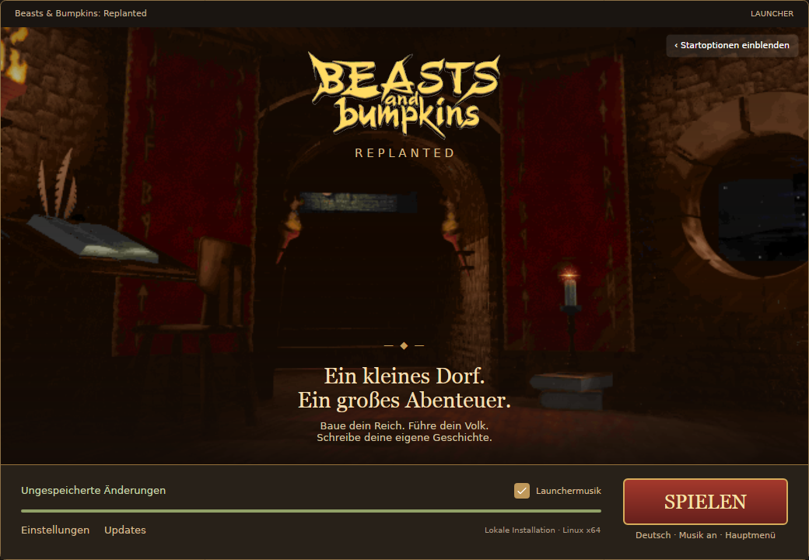

Dem Original verpflichtet
Spielregeln und Bedienung möglichst erhalten. Moderne Technik soll das vertraute Spielerlebnis tragen.
EIN SPIEL BEWAHREN. EIN DORF WIEDERBELEBEN.
R E P L A N T E D
Zurück ins Königreich – auf modernen Systemen.
Mit Respekt vor dem Spiel, das wir in Erinnerung haben.
Unabhängig · Nicht kommerziell · Dem Original verpflichtet
DIE IDEE HINTER REPLANTED
Manche Spiele verdienen es, weiterzuleben.
Beasts & Bumpkins: Replanted widmet sich dem Erhalt von Beasts & Bumpkins. Das Ziel: das ursprüngliche Spiel möglichst originalgetreu auf heutigen Systemen ausführbar machen – mit seinen Regeln, seinem Charakter und seiner eigenwilligen Welt.
Die technische Rekonstruktion und moderne Plattformanbindung bilden dafür die Grundlage. Ein separater Launcher erleichtert den Start und bündelt Einstellungen und Updates.
In Entwicklung. Verfügbare Builds sind Entwicklungsstände; die vollständige Abnahme läuft weiter.
Spielregeln und Bedienung möglichst erhalten. Moderne Technik soll das vertraute Spielerlebnis tragen.
Ein neu kompilierbarer Spielclient und ein eigener Launcher. Downloads erscheinen je geprüfter Plattform.
Ein unabhängiges, nicht kommerzielles Projekt. Sein Zweck ist der Erhalt des Spiels.

Ein Blick in den nativen Launcher · Oberfläche eines Entwicklungsstands
DEIN WEG INS KÖNIGREICH
Die Burgstube empfängt dich wieder. Der Launcher bereitet den Spielstart vor und lässt dir die Wahl deiner Einstellungen.
BEREIT FÜR DIE RÜCKKEHR?
Wähle dein System und deine Architektur.
Hier erscheinen die veröffentlichten Release-Pakete.
Release-Informationen werden geladen …
DER BEQUEME START
Startoptionen, Profile und Updates an einem Ort. Selbstenthaltend, ohne separate .NET-Installation.
Launcher herunterladenDAS SPIELPROGRAMM
Der native Client für dein System. Die erforderlichen Originalspieldaten werden separat bereitgestellt oder lokal eingebunden, wie im Release beschrieben.
Spielclient herunterladenLauncher und Spielclient sind getrennte Komponenten. Ein Launcherpaket allein enthält kein Spiel. Beachte die Datenvoraussetzungen und Installationshinweise des jeweiligen Releases. Bestehende Originalspieldaten benötigen eine eigene rechtmäßig erworbene Spielkopie.
GUT ZU WISSEN
Nein. Replanted ist ein unabhängiges, nicht kommerzielles Erhaltungsprojekt. Es besteht keine Verbindung zu Electronic Arts (EA), den ursprünglichen Entwicklern oder anderen Rechteinhabern; das Projekt wird von ihnen weder herausgegeben noch unterstützt.
Das Spiel soll möglichst vollständig und originalgetreu als neu kompilierbarer Code erhalten werden. Moderne Plattform- und Rendereradapter ersetzen die alte Systemanbindung. Das Projekt verfolgt keine Neugestaltung des Spiels.
Die Entwicklung und Prüfung laufen weiter. Ein verfügbarer Build bedeutet keine vollständige Abnahme aller Missionen, Plattformen oder Originalfunktionen. Konkrete Voraussetzungen und bekannte Grenzen stehen in den Releasehinweisen.
Der Launcher liest eine gemeinsame HTTPS-Manifestdatei. Sie verweist auf feste ZIP-Dateien eines GitHub-Releases und enthält Version, Größe und SHA-256. Installiert werden nur passende Plattformpakete. Die Manifestadresse steht in den Releasehinweisen.
Der Launcher verwendet bestehende Benutzer- und Spielstandpfade weiter und überschreibt diese beim Update nicht. Die Kompatibilität von Spielständen zwischen verschiedenen Clientversionen hängt vom jeweiligen Build ab; beachte die Releasehinweise.